构建Lua解释器Part8：构建完整的语法分析器(下)
前言
前面，我已经用3篇blog的巨大篇幅，详细论述了Lua编译模块的一些基本知识。其中，Part5通过一个简单的打印hello world的例子，论述了编译出来的虚拟机指令，如何存到Proto结构中，最后再通过虚拟机执行的流程。Part6详细论述了，词法分析器的设计与实现。而Part7则论述了，expression的编译流程。本章，将作为Lua内置编译器论述的最后一个部分。往后的部分，将不再涉及编译相关的内容。当然，经历这篇，相信读者能够完全理解Lua内置编译器的设计与实现，个人认为完整度还是比较高的。
dummylua基本仿照lua-5.3.5的设计，由于所有的实现，是我自己重新编写，因此在很多实现细节上，与官方的源码有所不同。但是基本的设计路线，遵循官方Lua的设计思路，测试用例的结果，也与官方Lua对照过。dummylua基本实现了Lua的语法，但是没有实现goto语句。本文将分为几个部分，首先讨论了Block的概念，然后先后论述了local-statement、do-end-statement、if-statement、while-statement、for-statement、repeat-statement、function-statement和return-statement的编译流程。最后由于本人水平有限，如果写的有不当的地方，希望各位大侠不吝赐教。如果你喜欢我的文章，喜欢技术讨论，可以加Q群185017593，也可以关注我的知乎账号
Lua的Block
我们首先要厘清的第一个问题，就是lua的block，什么是block？简单的来说，lua函数体内或一些statement语句（如if-statement、while-statement、for-statement和reapeat-statement）内部的statement list的集合就是block，比如下面所示的：
1 | function name() |
函数体内部的所有代码，就组成了我们的block。那么如果我们的一个脚本文件，从未定义过任何函数，那么它是否包含在block中呢？比如我们的一个lua脚本，姑且称之为test.lua，其代码如下所示：
1 | -- test.lua |
test.lua脚本中，未定义任何一个函数，但是里面的代码，仍然属于一个block，这个block属于top-level function，我们编译一个脚本时，这个脚本就会被作为一个函数看待，这个函数就是top-level function。block与block之间的关系，我们可以通过图1来展示：
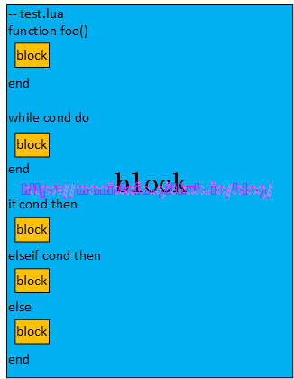
图1由图可知，蓝色部分的block，属于top-level function的block，而函数foo内部，右括号到end之间的部分，则是函数foo的block。此外，带有do end结构的statement中，do和end之间的部分也是block。if-statement中，then和elseif、else或end之间的部分也是block。如果block内部的statement，也可以有它自己的block。现在我们对block的组织有了进一步的了解，那么它有什么用呢？block概念的存在，能够使我们快速清空一些local变量，并且更易于实现break语句，在后续的论述中，我将对这些进行解释和说明。
block的数据结构
现在我们来看一下block在dummylua中的数据结构，该结构被定义在luaparser.h文件中：
1 | // luaparser.h |
现在，我逐一对BlockCnt内的字段进行说明：
- previous指针：该指针指向前一个block，当其是top-level function的block时，previous的值为NULL。
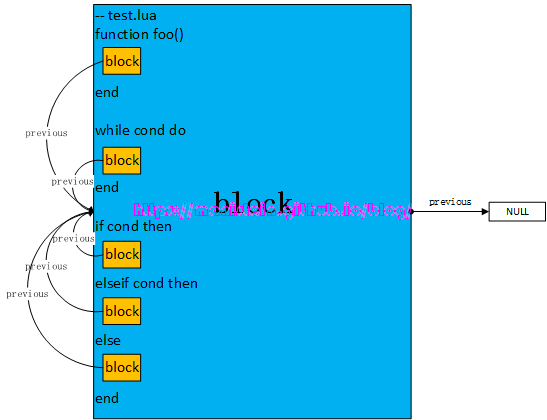
图2 - nactvar：活动变量总数，其实本质就是local变量的总数，这里存的是，进入新block前，当前的local变量总数，在退出当前block的时候，将根据这个值，清空当前block的local变量。
- is_loop：循环语句的block，is_loop会被设置为true，当其为true时，在退出block阶段，将用于处理break语句的跳转。
- firstlabel：当前block，第一个break语句，在全局标签列表中的位置。用于查找与循环语句相对应的break指令。
上述逻辑，我对BlockCnt的成员变量，进行了简要说明，接下来的内容，将会逐步解开这些变量的神秘面纱。
enterblock的逻辑流程
现在我们来讨论enterblock和leaveblock的逻辑流程，先来看看enterblock我们都做了什么事情，从实现层面来看，其逻辑代码如下所示：
1 | // luaparser.c |
每一步操作，注释都有说明，正如Part7所写，我们的FuncState实例，实际上是对某个function进行编译的时候，创建的用于暂时存储编译信息的临时变量。同样的，它也包含了当前编译block的信息，进行不同部分的编译，它也会切换block的指针。
leaveblock的逻辑流程
接下来，我们来看一下leaveblock的逻辑流程：
1 | // luaparser.c |
上面的注释，对leaveblock的操作，进行了一些说明，由于到目前为止，读者对一些概念还没有认知，因此只要理解block的概念，以及需要关注进入和离开实践即可，我将在后续逐步展开论述。
local statement编译流程
现在我们将进入local statement编译流程的讨论之中，在开始正式讨论之前，我们先来看一下local statement的EBNF文法：
1 | local namelist ['='' explist] |
对于explist的论述，Part7已经写了很多了，这里不再赘述，如果读者有回顾的需求，那么请回到Part7进行复习。对于local statement来说，它的EBNF文法非常简单，不过再继续讨论之前，我们还是要先复习一下FuncState的数据结构：
1 | // luaparser.h |
另外，我们还需要关注另外一个数据结构Dyndata：
1 | // luaparser.h |
Dyndata数据实例，是保存在词法分析器LexState实例的dyd变量中，在对这些结构，重新进行梳理之后，我们可以预想一下，准备开始编译lua脚本的内存形态，现在通过图3来展示这一点：
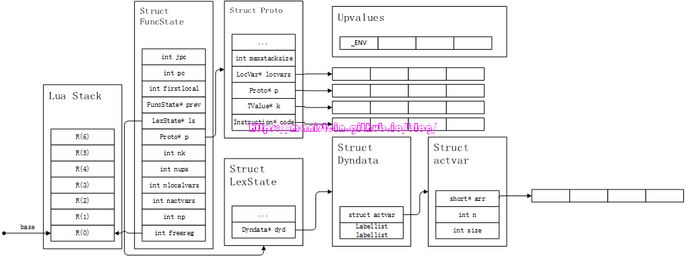
图3 接下来，我们来看一下local statement的编译流程，我们前面已经展示了local statement的EBNF文法，当我们的语法分析器识别statement的首个token为local时，则需要判断该statement是个local statement还是local function statement（稍后会讨论）。当我们的代码，不符合local function statement的语法结构时，则进入到local statement的编译分支之中。token TK_LOCAL之后，到token ‘=’之前的部分，我们称之为variable（变量），如下所示：
1 | local var1, var2; |
上述伪代码中的var1、var2、var3和var4都是variable，那么我们的编译器会怎么处理这些variable呢？首先，他们会被按顺序存入Proto结构的locvars表中，同时，也会被存到Dyndata这个数据结构中，上面的例子，我们可以通过图4来展示：
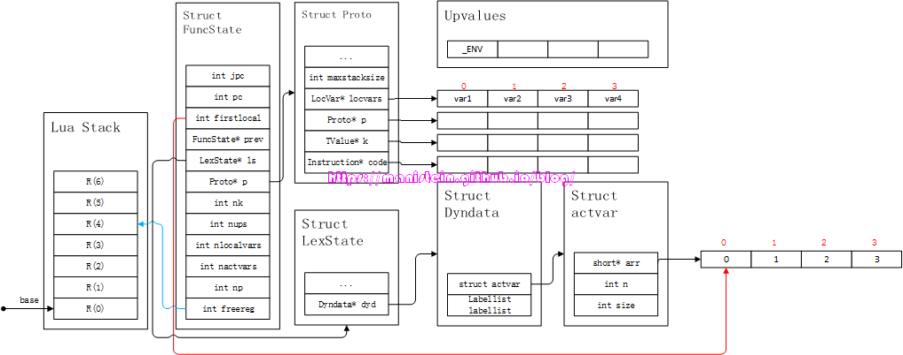
图4图4中的locvars列表和arr列表，均填上了对应的信息。我们可以观察到var1~var4被存到了Proto的locvars列表中，而dyd->actvar->arr则存了locvars列表的索引（图中的红色数字为数组索引）。Proto结构中，locvars列表的下标，就指明了该local变量，位于哪个寄存器中。比如var1位于索引值为0的位置，那么它在lua stack中的位置就位于R(0)，var2位于R(1)，var3位于R(2)，var4位于R(3)。我们也可以观察到，指示下一个被使用的，空闲寄存器的变量freereg指向了R(4)，这么做的目的是，local变量是暂存在寄存器中，只要block没退出，这些local变量会一直占用这些寄存器（lua通过栈的空间，来表示寄存器），调整freereg的目的是为了避免原来的local变量被覆盖。
local变量的赋值，和全局变量的赋值逻辑是很不一样的，就拿上面的例子来看，假设exp1和exp2的值为e1和e2，那么，我们将得到如图5的结果：
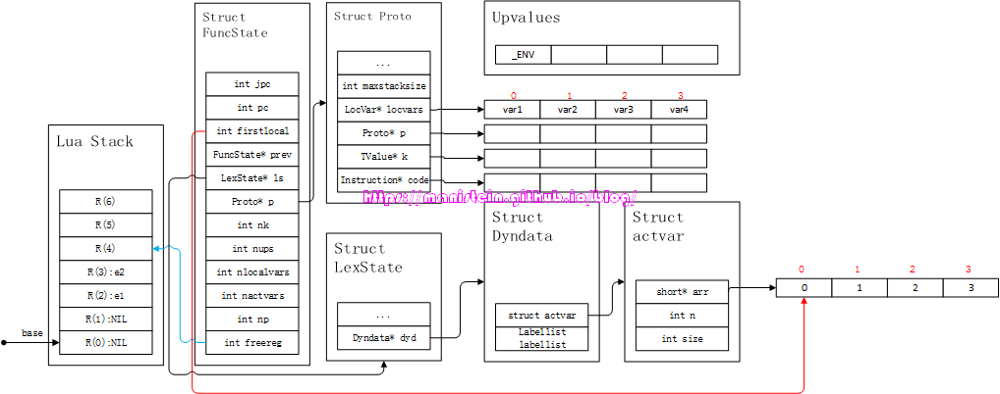
图5我们可以看到，值是直接被赋值到栈上的，并没有像全局变量一样，有个表，存储local变量的key，并将其值作为value进行存储。lua栈上的那些值，也只是示意用的，在编译阶段，其实并不会执行指令进行操作。那么现在一个新的问题来了，我们查找一个全局变量，可以到_ENV中查找，那么我们查找一个local变量，又该如何查找呢？现在，我们还是用回上面的例子，并以查找var1为例：
- 首先，编译器会找到Dyndata结构中的arr数组，找到最右边的有效值，如图6所示：
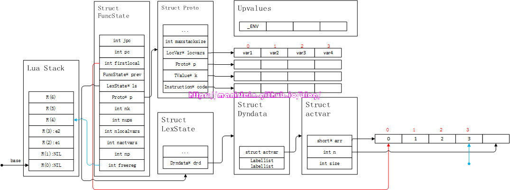
图6 图中右侧的蓝色箭头，就是arr表中的最后一个有效local变量，这里需要注意的是Dyndata是所有function共享的，因此每个function进行编译的时候，都要记录其首个local变量，在dyd->actvar->arr中的位置。 - 右侧蓝色箭头所指向的值为3，那么意味着这个local变量位于当前编译的function，的locvar列表中的第4个位置，也就是fs->p->locvars[3]这个变量，此时需要将它的变量名，和我们想要查找的var1变量名进行对比，因为变量名var4和var1不相等，因此这个local变量不是我们想要找的变量，此时右侧的蓝色箭头需要向左移一位，去查找下一个local变量，用相同的方式查找，看看它是否是我们要查找的变量。
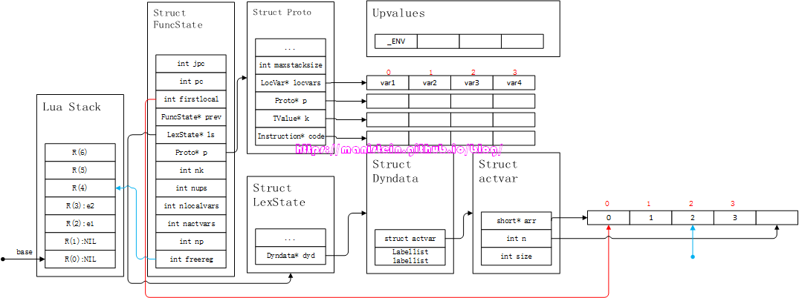
图7 - 根据上述的流程，fs->localvars[2]的变量名也不是var1，因此需要继续向左移动。
- 当右侧蓝色箭头，移动到fs->firstlocal的位置时，fs->localvars[0]上的local变量就是我们要查找的var1，此时获取locvars表的索引值0，这个0值，指示了我们的var1位于寄存器R(0)值，也就是说R(0)的值就是我们的local变量var1。
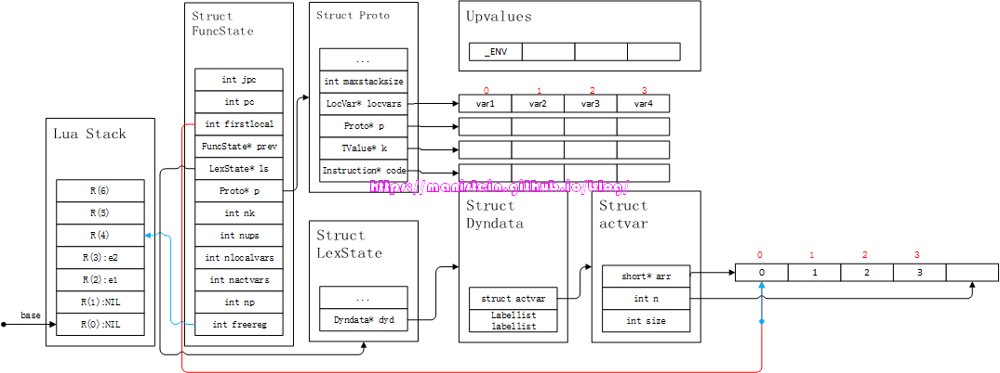
图8
为什么要以从右往左的顺序查找呢？按照我们的编译流程，dyd->actvar->arr列表中，越是在右边的local变量，说明其所处的block层次越深，而我们的local变量是允许重名的，比如下面的例子：
1 | local var1 = 10 |
do和end之间，是一个层次更深的block，而do end之间的var1，此时位于dyd->actvar->arr的最右侧，而我们的print函数，显然是要找到离自己最近的var1，因此从右往左找，能够找到相同block的local变量，从而进行正确的处理。
大家可以回顾一下Part5关于变量名查找的流程，当我们没办法在fs->p->locvars中找到想要查找的变量名时，则会去upvalue中查找，如果还找不到，则会到外层函数的local列表中查找，而后是外层函数的upvalue列表，然后如果再找不到，则需要再往外一层的函数查找。最后会到_ENV中，也就是去全局表中查找。当我们的local变量很多的时候，查找一个全局变量名是非常耗时的，这也是为什么，将全局变量先赋值到一个local变量能够提升运行效率的原因，如下所示：
1 | local math = math |
我们的local变量，也不是能够被无限定义的，它也有一个上限值，默认是200个，超过200个local变量的定义，解释器将会在编译阶段报错。
我已经对存储local变量的数据结构，识别和存放方式，赋值方法，和查找方法进行了介绍，接下来，我将通过一个新的例子，来展示local-statement的编译流程，来结束local-statement编译流程的讨论。接下来我们来看一下下面一个例子，看看其编译流程是怎样的：
1 | local a, b, c = 1, 2 |
首先，我们的statement的首个token是TK_LOCAL，并且紧随其后的token是个TK_NAME类型的，因此此时进入到了local statement的编译分支之中。首先编译器会对local之后，‘=’之前的variable部分进行处理，即将他们存入到fs->p->locvars列表，和dyd->actvar->arr列表之中，于是得到图8的结果：
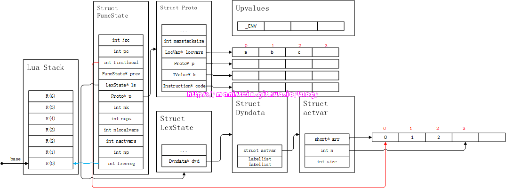
图8我们可以观察到，变量a、b和c都被存到了fs->p->locvars列表中了，而此时，常量表k不会写入任何东西，因为不需要，此时，fs->freereg也仍然指向R(0)，因为尚未生成任何指令，目前阶段也只是对variable进行处理。这里还需要关注的是ls->dyd->actvar->arr和fs->p->locvars的对应关系。
在处理完variable之后，接下来，我们遇到了等号，此时编译器就会按照explist的处理流程，处理等号右边的exp列表了，其处理流程也非常简单，就是将1、2的值，先写入到常量表k中，然后生成两个OP_LOADK指令。由于左边的variable的数量，多于右边exp的数量，因此，多出来的variable需要赋值为nil。如果是variable的数量少于exp的数量时，多出来的exp则会被丢弃。编译后的结果，如图9所示：
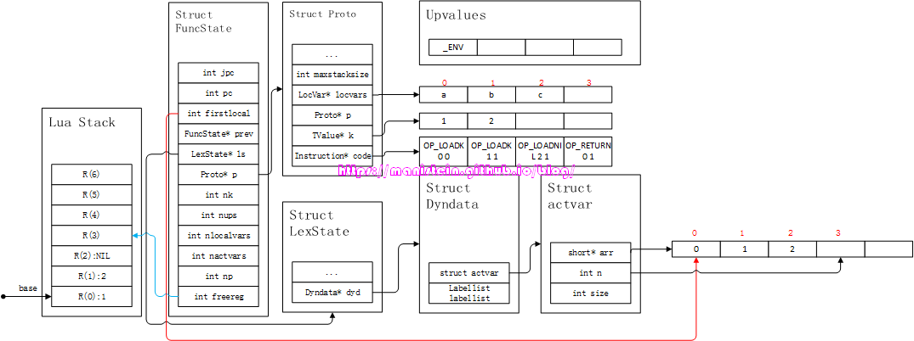
图9注意此时的fs->freereg的指向，前面的寄存器已经被三个local变量占据了，所以fs->freereg的值为3。此外，这里需要注意的是，在编译上面的赋值语句的时候，没有查找变量的需要，只有后续有对local变量进行访问的需要时，才需要去查找local变量。到目前为止，我们就完成了local statement的编译流程了。
do-end statement编译流程
对于do-end statement，我们可以先看看它的EBNF文法：
1 | do |
我们已经讨论过local-statement的编译流程了，现在可以进一步观察一下，enterblock和leaveblock对local变量的处理，承接上一节的例子，我们现在来看一个新的例子：
1 | local a, b, c = 1, 2 |
在完成第一行编译的时候，我们得到了图9的结果，接下来，我们则进入到do-end的编译逻辑之中了，此时要执行enterblock的逻辑流程，这时候，我们需要一个新的BlockCnt变量，用它来存储当前的local变量数量，于是得到图10的结果：
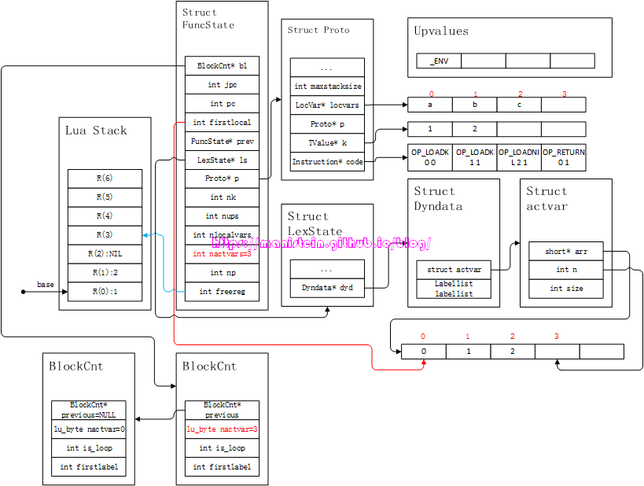
图10我们可以看到，图10左下角有两个BlockCnt的结构实例，左边那个是原来fs->bl指向的那个，进入到do-end block以后，则创建了一个新的BlockCnt实例，此时fs->bl要指向新的BlockCnt实例，而新BlockCnt实例的previous指针，则指向原来的那个BlockCnt实例。新的BlockCnt实例，要记录目前为止，do-end之外的所有local变量的总数，而此时的local变量一共有3个，因此nactvar的值为3。接下来，编译器将编译do-end之内的代码，首先将a和b加入到fs->p->locvars列表中，同时拓展ls->dyd->actvar->arr列表，于是得到图11的结果：
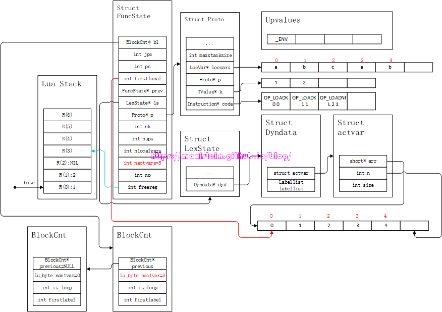
图11我们应该留意到，此时的fs->nactvars的值已经变成了5，因为此时的local变量已经达到了5个，而bl->nactvars则保持不变，因为它代表进入当前block前，local变量的总数，此时相应的信息也填入了fs->p->locvars和ls->dyd->actvar->arr中。接下来，就是编译等号右侧的explist。3和4是常量，因此，首先会将这两个数值，写入到常量表k中，也就是fs->p->k列表中，于是我们得到了图12的结果：
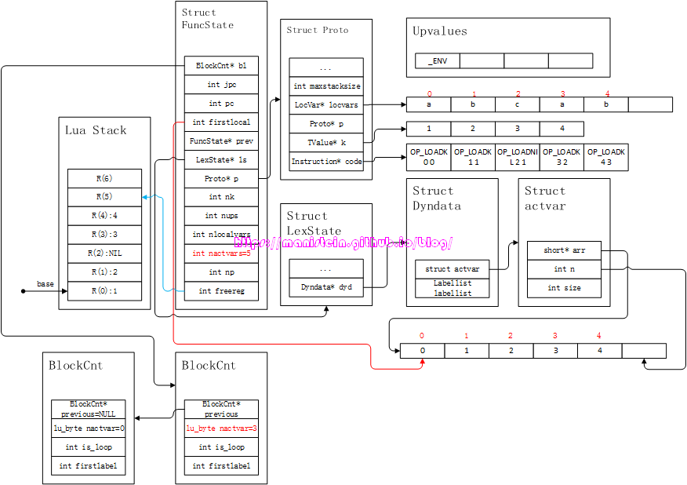
图12到这一步为止，do-end这个block内的代码就编译完了，接下来就是退出block的流程，首先要做的是，将fs->nlocalvars、fs->nactvars和ls->dyd->actvar.n的值回退回来，那么现在的问题来了，首先是回退多少？回退的含义是什么？针对第一个问题，回退多少呢？我们的目标是将当前block的local变量清空，那么回退的数量，自然是当前block的local变量的数量，于是，我们只需要将fs->nactvars - fs->bl->nactvars就能得到，因为我们的fs->nactvar总是能和fs->nlocalvars变量同步。第二个问题，回退的含义是什么？意味着原来被占用的空间，可以给新的block的local变量暂存。在完成leaveblock的操作之后，我们得到了图13的结果：
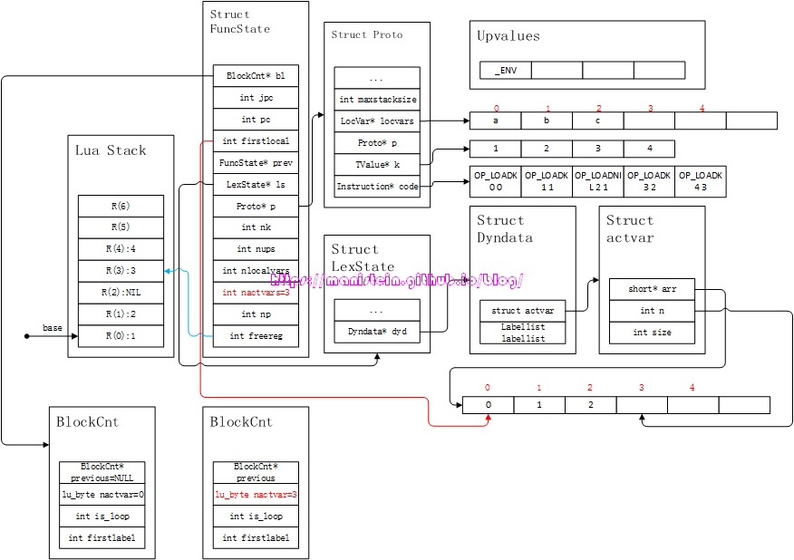
图13这里还需要注意的是，我们的fs->freereg也被重置了，直接被置放到local变量c的上方，这样清退了前一个block的local变量，至于之前的局部变量的一些信息，gc将会在合适的时间将其清理。到目前为止，我们就完成了do-end block的编译流程了。
if statement编译流程
我们现在将进入到if statement的编译流程的讨论之中，按照惯例，首先要描述if statement的EBNF文法，其EBNF文法如下所示：
1 | ifstat ::= if cond-part then block { elseif cond-part then block } [ else block ] end |
从EBNF文法来看，当statement的首个token是TK_IF的时候，进入ifstat的编译分支，花括号内的部分，代表可以出现0次或者多次，方括号内的部分，代表可以出现0次或者1次。我们的expr的编译流程，已经在Part7进行了详细的说明了，这里不再赘述。
尽管EBNF文法，能够很好地描述if statement的语法结构，但是有些细节它是无法表达的，比如cond-part，不仅仅只是要计算一个expr的值，并把值放入某个寄存器就可以了，它还需要生成对该寄存器进行测试的指令，还需要进行条件跳转处理、逃逸跳转处理等。到目前为止，我们还有一个任务没有做完，就是对if statement的结构，进行进一步说明，从结构上看，if statement由几个部分来组成：
- 表示随后跟着的是cond-part的系统保留字：if、elseif
- cond-part：条件判断的部分
- then-part：系统保留字then和其后的block
- else-part：系统保留字else和其后的block
- 表示结尾的部分：系统保留字end
接下来，我首先会通过一张概念图来展示if statement的跳转流程，最后通过一个例子，展现if statement的编译流程。
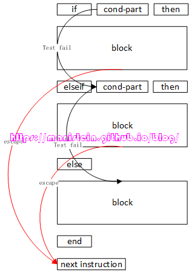
图14我们可以看到，上图中，黑色箭头代表测试失败时的跳转，当一个cond-part测试失败，要么跳转到下一个cond-part的测试中，要么跳转到else-part中，亦或是直接跳过if statement，进入下一个statement。而红色箭头表示，当一个then-part结束时，那么它需要跳出来，执行图14中的next instruction，因为if statement每次只能执行一个分支。接下来，我们来看一个例子，并且通过编译这个例子来看看if statement的整体编译流程：
1 | local a, b, c = 10, 30, 20 |
由于在Part7中，我花了巨量的篇幅论述了expr的编译流程，因此这里会略过很多细节，直接写入生成结果。首先第一步，我们要对local statement进行编译，得到了图15的结果：
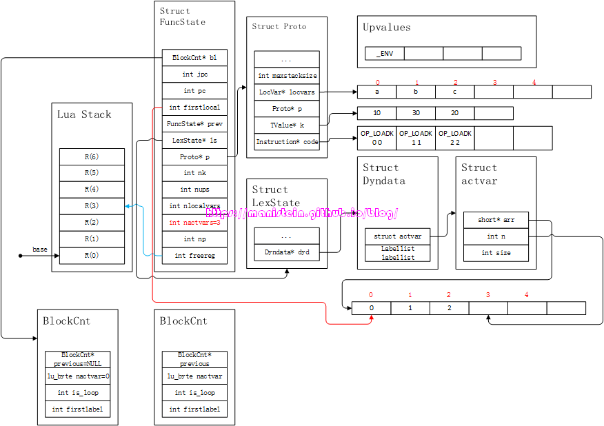
图15接下来就进入到了if statement的编译流程了，首先我们要先跳过TK_IF这个token，然后开始编译第一个cond-part：a>=b，于是得到图16的结果：
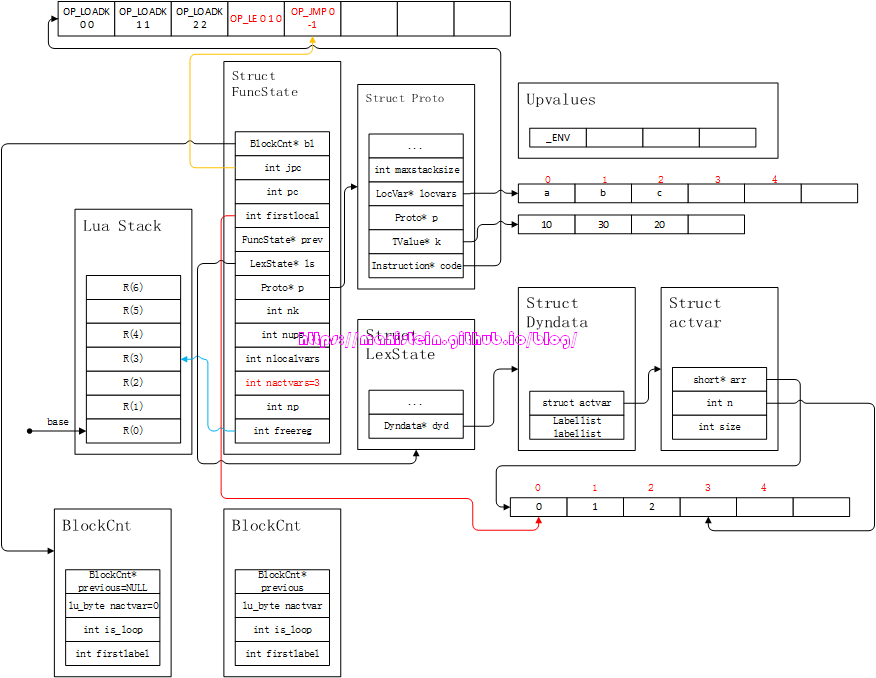
图16上图code列表中，被染成红色的两个指令，就是我们的cond-part编译后的结果，这里我们回顾一下OP_LE的指令：
1 | OP_LE A B C |
在本例中的含义则是，R(1)<=R(0)的结果不等于0（也就是R(1)<=R(0)即b<=a成立），那么PC寄存器自增，也就是跳过OP_JMP指令，直接执行第一个then-part的逻辑，否则执行JUMP指令，这个JUMP指令会跳到下一个cond-part中进行新的判断。这里需要注意的是，cond-part里生成的OP_JMP指令，是iAsBx模式，也就是高18位来表示跳转的相对地址值，为了既能够表示正值，又能够表示负值，编译器用了131071表示0值，-1则表示为131070，这里为了方便读者理解，直接填写-1，而不是131070。接下来，编译器会对第一个then-part进行编译，得到图17的结果：
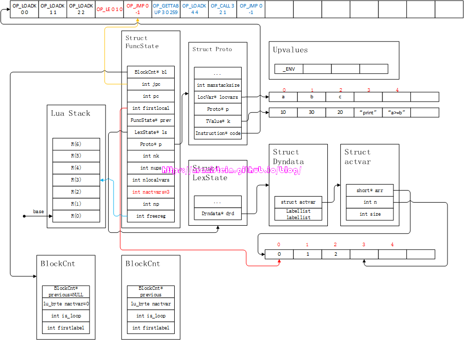
图17这个then-part编译好的指令，我通过蓝色标记出来，主要用于区分。完成了第一个then-part的编译，接下来到了elseif之后的那个cond-part的编译了，得到图18的结果。
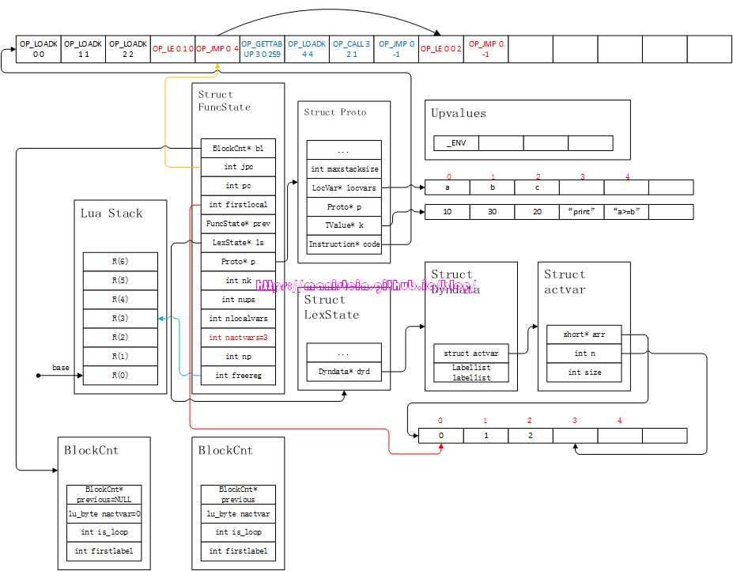
图18我们可以看到，第一个OP_JMP指令，指向了第二个cond-part的第一个指令，因为PC寄存器自身就会执行自增的操作，因此这里的-1被改成了4。接下来，就会对第二个then-part进行编译，于是得到图19的结果：
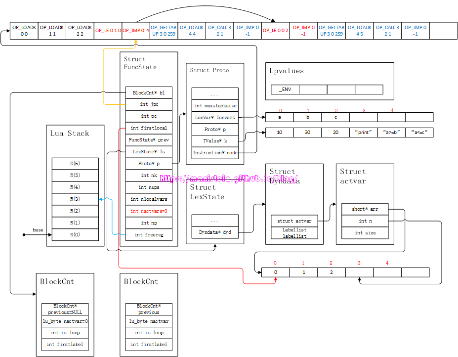
图19第二个then-part的编译流程很简单，就是将”a<=c”这个字符串打印。接下来则是进行else-part的编译，得到图20的结果：
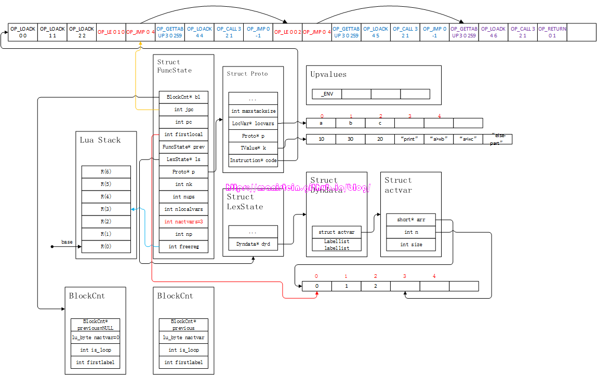
图20图中的紫色部分代码，就是else-part的编译结果，它先将print函数入栈，然后将“else-part”这个字符串入栈，最后调用这个函数。else-part完成编译之后，我们就进入到了最后的收尾阶段，这里需要处理逃逸跳转，也就是then-part执行完之后，跳到下一个statement生成的第一个指令之中，于是得到了图21的结果。
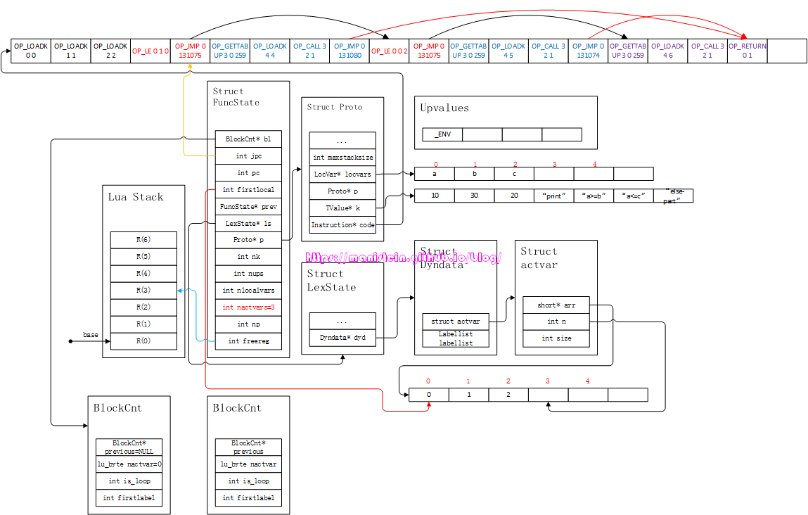
图21到目前为止，我就完成了if statement编译流程的论述了。
while statement编译流程
现在我们进入到了，循环语句的编译流程之中了，现在先从while statement开始。首先我们来看一下，while statement的EBNF文法：
1 | while cond-part do block end |
严格来说，while statement主要由以下几个部分组成：
- 表示进入while statement编译流程的首部token–while
- cond-part：条件判断部分，判断是否要进入循环
- do-end：while循环语句的body部分，执行其他的statement list
- 跳转回cond-part的JMP指令：这个指令紧随block的最后一个指令，跳转回cond-part判断是否需要继续循环
我先通过一个逻辑结构图，来展示while语句的语法结构，然后通过一个例子来对while语句的编译流程进行阐述：
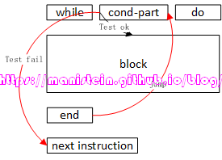
图22我们现在来看一个新的例子，并借助这个例子来观察一下，while语句的编译流程：
1 | local i = 0 |
首先，编译器会先编译第一行的statement，然后得到图23的结果：
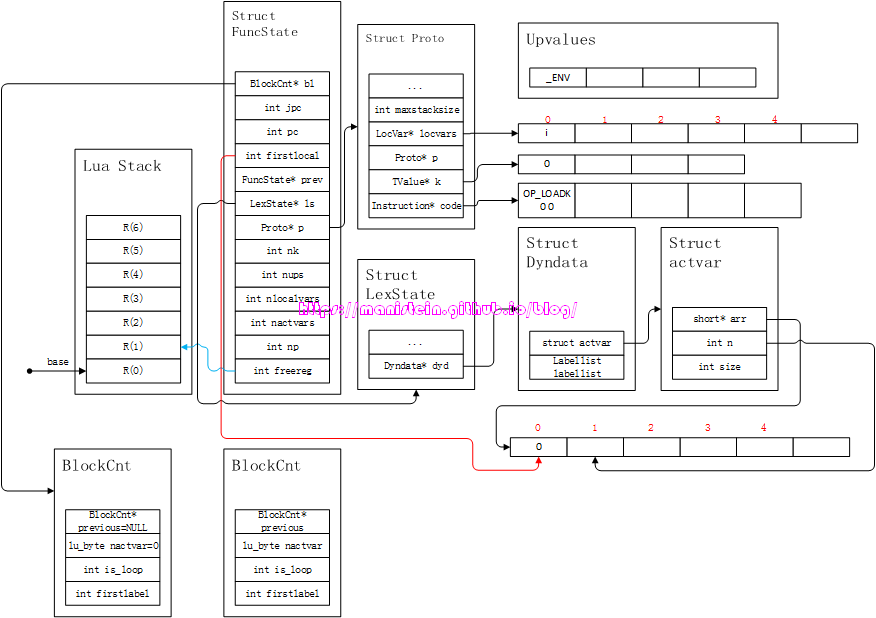
图23我们可以看到，在图23中，将local变量i，写入了fs->p->locvars列表中，将0写入常量表fs->p->k中，此外ls->dyd->arr也有所调整。接下来，则进入到while语句的编译之中，在识别了while statement的首个token–TK_WHILE以后，编译器进入到了cond-part（i<10）的编译之中，得到如图24的结果：
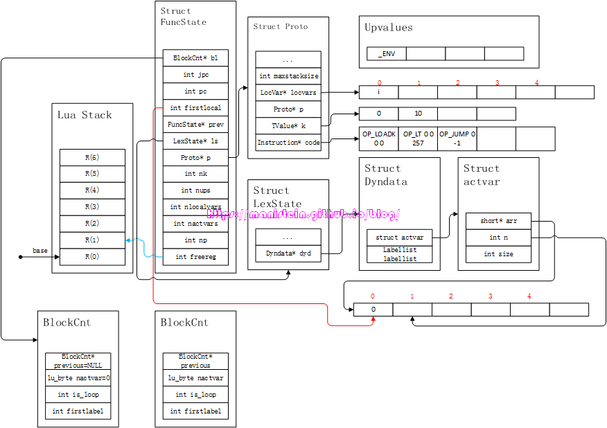
图24和if statement类似，这里的cond-part，除了将i<10这个exp编译成指令，还在这个exp指令之后，添加了一个OP_JUMP指令，这个jump指令，将在我们测试失败时，跳转到下一个statement的第一个指令中。接下来，我们就进入到了while语句的body部分的编译了，这里需要进入到新的block，首先我们会进行i=i+1的编译工作，于是得到图25的结果：
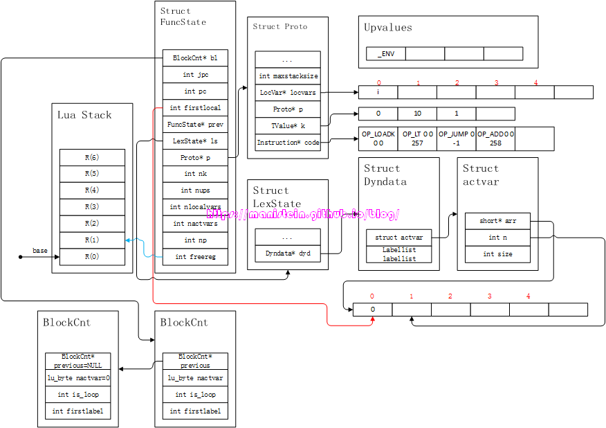
图25新的指令，将local变量i增加了1，并且将结果存回到local变量i的寄存器位置上。接下来要执行block的另一个语句，就是print(i)，于是得到图26的结果：
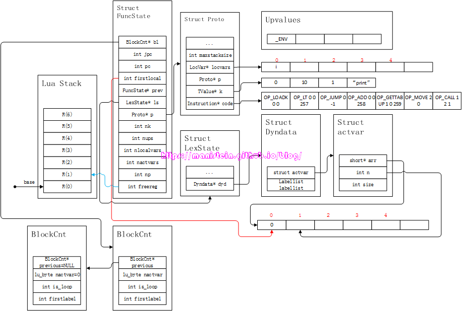
图26上图的结果，首先将print函数放到栈中，然后将参数i的值，move到函数print的上方，最后通过调用函数的指令来执行这个流程。到目前为止，while body内的block编译就结束了，但是这是一个循环，因此block执行完之后，还需要跳转到cond-part进行新的判断，于是，我们需要新增一个jump指令，得到图27的结果：
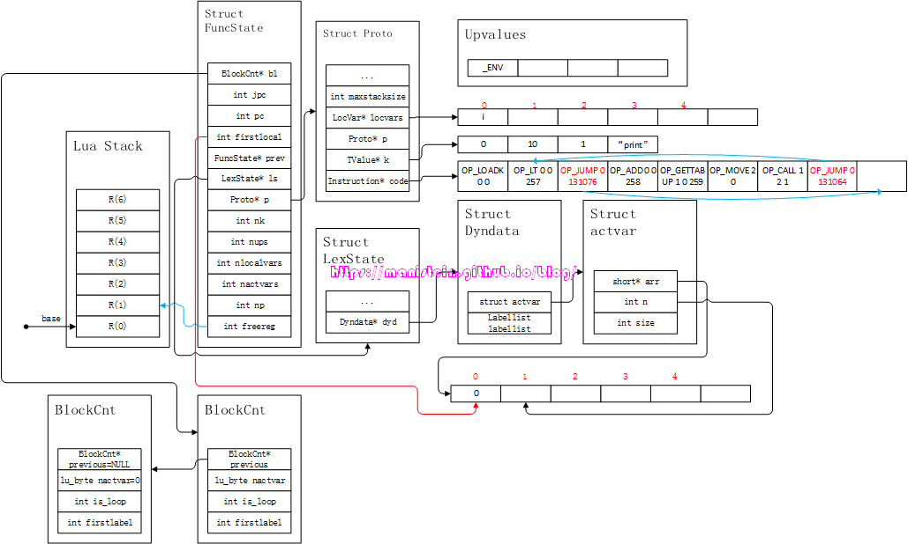
图27jump指令跳转到了条件判断的流程之中，同时OP_LT指令测试失败时，我们的指令跳转到下一个statement的第一个指令中。到目前为止，我对while语句的编译流程的的论述就结束了。
repeat statement编译流程
现在，我们将进入到repeat statement的编译流程的论述之中了，其EBNF文法的结构如下所示：
1 | repeat block until cond-part |
现在我来对repeat statement的组成结构进行详细的说明：
- statement的第一个token：这个token为repeat，它标志着编译流程进入到repeat statement的编译流程分支之中
- body部分：repeat之后，until之前的statement list集合，就是repeat statement的body部分
- 表示cond-part的引导token，这个token即是until，在其之后即是条件判断部分，cond-part
- cond-part：条件判断，判断是否能够继续循环
我通过一张逻辑图来展示，repeat的循环跳转逻辑：
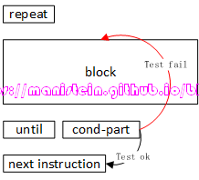
图28接下来，我通过一个例子，来展示repeat statement的编译流程：
1 | local i = 0 |
首先，编译器会执行local statement的编译，得到图29的结果，于是有： 图29
图29
接下来，则进入到repeat statement的body部分，现在开始编译i=i+1，于是得到图30的结果：
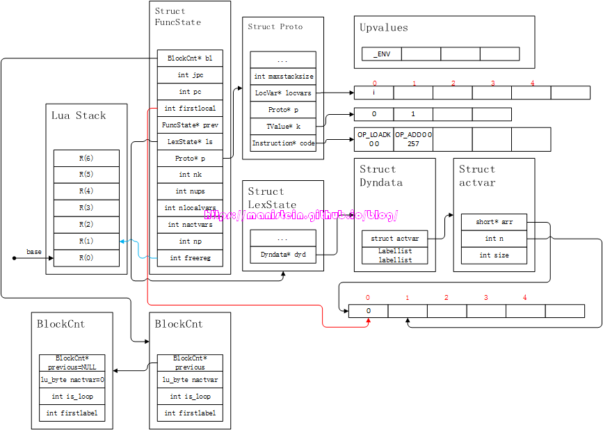
图30这里将local变量i和常量1相加，并且存回到local变量i的寄存器中。到这一步为止，repeat statement的body部分就执行完了，后面则跳过until，对cond-part进行编译，得到图31的结果：
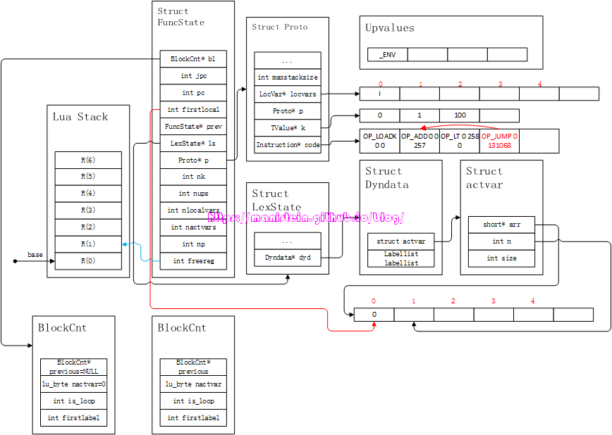
图31上图的指令，如果测试通过，则跳过jump指令，进入下一个指令，如果测试失败，则回到红色箭头所指的指令。到目前为止，我们就完成了repeat statement的编译流程探索了，对于其他的情形，读者可以结合Part7的内容，进行推导。
for statement编译流程
接下来，我们要探索的是最后一种循环语句–for循环。for循环语句，从类别上分，主要有两大类，一类是fornum，一类是forlist，他们的语法结构也是不同的。fornum的EBNF文法如下所示：
1 | for Name '=' exp ',' exp [',' exp] do block end |
fornum的语法结构，我们可以梳理成如下的形式：
- 开头标识的token–for：表示应当进入到for statement编译流程
- index-part：索引值定义部分，在fornum类型中，这里一般是给一个局部变量赋初值，Name是TK_NAME类型的token，是个局部变量，=后的exp的值应当是数值类型
- limit-part: 限制部分，就是初始化阶段，定义的局部变量的值，超过limit之后，将不再进行循环
- step-part：每次执行完fornum的body之后，初始化部分的局部变量，每次要加的值，可以省略，默认值是1
- body-part：do-block-end的部分，是循的本体
我们现在通过一张图来感受一下，fornum的语法构成：
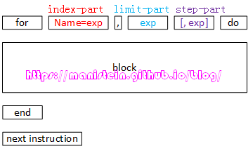
图32接下来，我通过一个例子来说明fornum的编译流程：
1 | for i = 1, 10 do |
语句很简单，编译器首先识别statement的第一个token是TK_FOR，然后识别到了exp “i = 1”，表明现在要进入fornum的编译流程之中。此时编译器分别对fornum语句的index-part、limit-part和step-part进行编译，得到图33的结果：
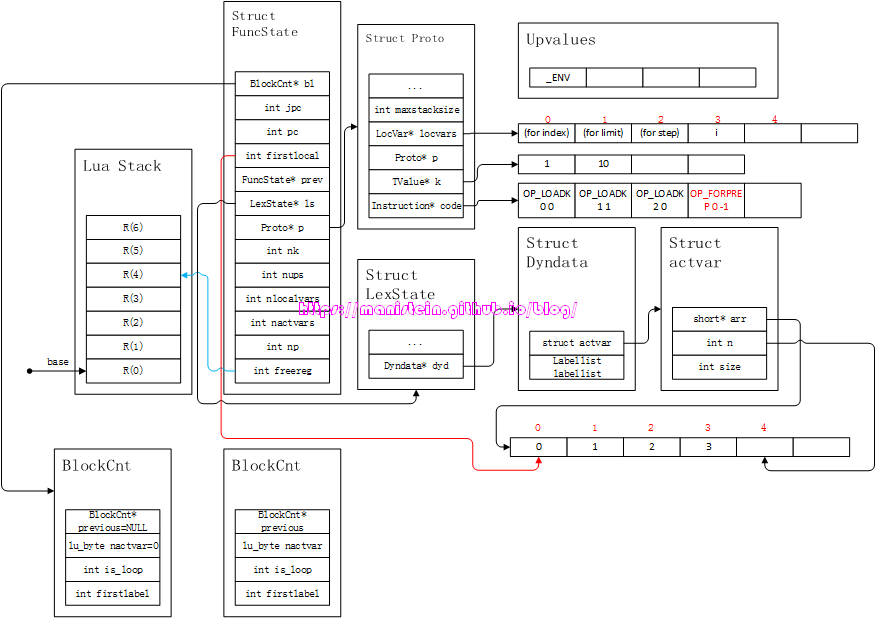
图33上图包含的信息很多，已经涵盖了fornum语句的初始化部分了，我们可以把这个部分的操作作如下归纳：
- 生成4个local变量，分别是(for index)、(for limit)、(for step)和i。前面三个分别对应的是，for语句中的局部index变量i，循环限制10，每次循环递增量1(默认值)，以及表示局部的index变量i。第四个变量，其实是(for index)的值赋值过来的，至于为什么要做这个操作，和upvalue有关，相关的问题，我们需要在后续的upvalue相关的章节里深入探讨。在lua虚拟机运行阶段，完成fornum初始化的堆栈信息，如下所示：
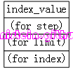
图34 - fornum语句，初始化阶段，分别通过OP_LOADK指令，将对应的值，放置到对应的寄存器中。这里需要留意的是OP_FORPREP指令，这个指令的作用是，对目标寄存器，也就是我们的(for index)，减去(for step)的值，然后跳转到循环判断指令OP_FORLOOP指令处，进行是否执行循环逻辑的判断，用公式表达它做的行为，则是：R(A)-=R(A+2); pc+=sBx。由于，现在OP_FORLOOP指令尚未生成，因此OP_FORPREP指令的第二个参数，目前赋值为NO_JUMP也就是-1
在完成了fornum的初始化流程之后，现在进入到body的编译流程之中，首先，我们会进入到新的block，然后对print(i)进行编译，最后生成一个判断是否执行循环体的指令OP_FORLOOP，于是我们得到如图35的结果：
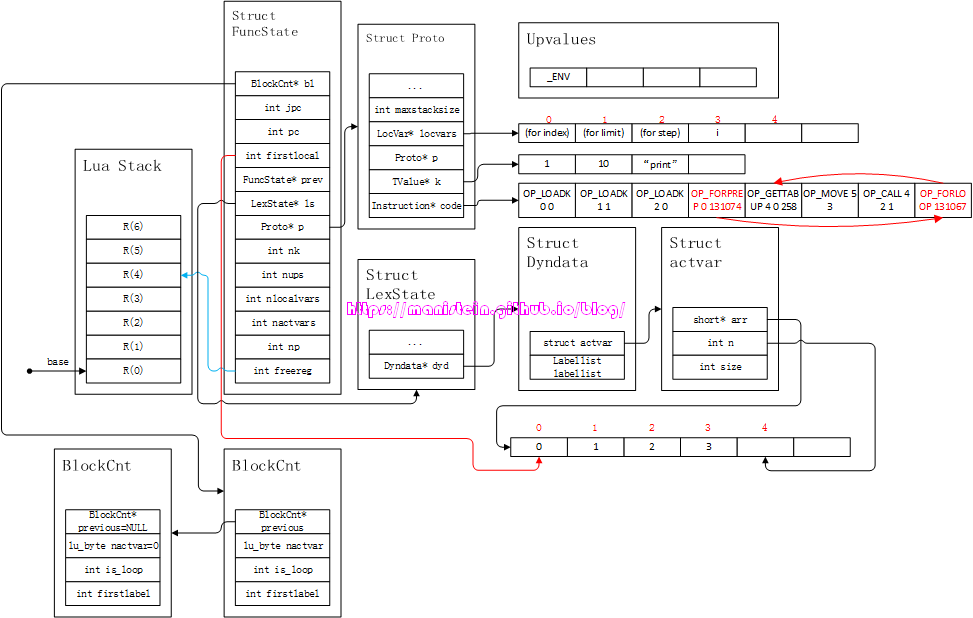
图35现在我们完成了完整的fornum语句编译了，这里需要注意几个点，第一个是当我们执行到OP_FORPREP指令之后，会对(for index)进行初始化操作，也就是将(for index)的值，减去(for step)的值，然后跳转到OP_FORLOOP指令处。OP_FORLOOP指令，会根据(for step)的情况，来对(for index)和(for limit)进行比较判断，当(for step)大于等于0的时候，如果(for index)的值小于或者等于(for limit)的值时，那么PC寄存器会从OP_FORLOOP指令，顺着图中的红色箭头，跳转到目标指令处，否则执行OP_FORLOOP的下一个指令。当(for step)的值小于0的时候，如果(for step)小于(for limit)的值的时候，OP_FORLOOP跳转到红色箭头所指的指令中，否则执行OP_FORLOOP的下一个指令。此外，OP_FORLOOP指令会令(for index)的值加上(for step)的值，并将结果覆盖到(for index)上，当OP_FORLOOP满足跳转条件时，会令index_value部分赋值为(for index)的值，用伪代码表示则是：
1 | R(A)+=R(A+2); if R(A) < ? = R(A+1) then { pc+=sBx; R(A+3)=R(A) } |
现在我们将进入到forlist语句的编译流程探索之中，依照惯例，我们首先看一下forlist的EBNF文法：
1 | for namelist in explist do block end |
按照上面的EBNF文法，理论上，forlist语句中，用于循环的局部变量可以是无限多的，系统保留字in之后的exp列表理论上也应当支持无限多，dummylua目前只支持最常规的写法，因此EBNF文法将会调整为如下所示：
1 | for kname, vname in funccall(exp) do block end |
这里默认funccall是我们初始化迭代器的函数，而exp则是它的参数，即是那个要被遍历的表达式，exp在这里要求是一个table，上面的kname和vname则是遍历时的k和v的值。接下来，我们通过两个例子来探讨一下forlist的编译流程，第一个是我们的ipairs调用，第二个是pairs调用。先来看一下第一个例子：
1 | for k, v in ipairs(t) do |
进入编译前，我们需要先对forlist语句，进行初始化操作，for之后do之前的部分，均参与到了编译初始化的流程之中，于是得到图36的结果：
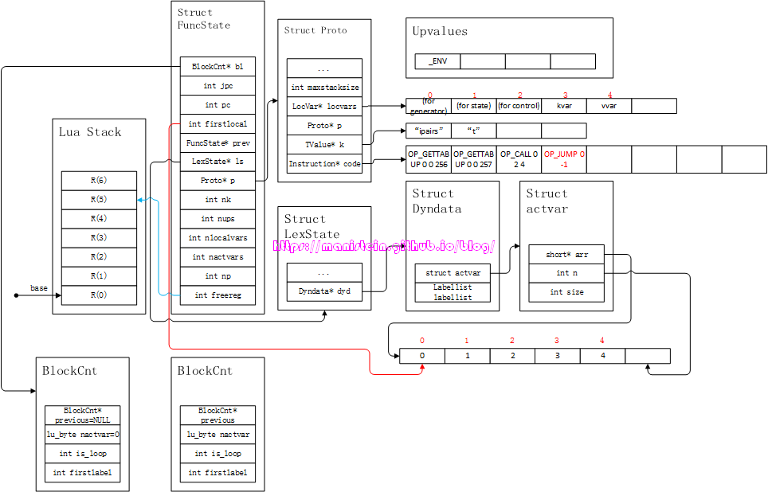
图36图36的初始化阶段，做了几个操作，首先设置了一些局部变量(for generator)、(for state)、(for control)、kvar和vvar，其中kvar和vvar分别对应上述的k、v值，而前面的几个部分，后面会讨论。接着编译器将ipairs函数压入栈中，然后把ipairs的参数也压入栈中，接着通过OP_CALL指令，调用了ipairs函数，这个ipairs函数，在base库中是luaB_ipairs，其定义如下所示：
1 | // luabase.c |
这个函数的作用，则是将内部的luabase.c内的c函数–ipairs（注意不是脚本中的ipairs函数）设置到(for generator)域，将要遍历的参数t放置到(for state)域，将0值设置到(for control)域，并预留kvar和vvar的位置，在虚拟机运行阶段，在完成forlist的初始化操作之后，虚拟机的内存结构则是图37的结果：
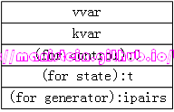
图37图中ipairs的函数逻辑，如下所示：
1 | // luabase.c |
这个函数的作用，就是遍历table t中的array域，并返回刚刚遍历到的index和value的值。下次调用ipairs函数是，上次遍历得到的key结果+1，作为新的索引，去取新的值，然后将新的索引值，赋值到kvar域中。这里只是简单阐述一下，ipairs要做的事情，实际上，这个函数是在OP_TFORCALL指令里调用，初始化阶段，并不会调用它，在虚拟机执行阶段，forlist语句的初始化阶段完成之后，内存结果就是图37所示的那样。
接下来，则是对do-end部分的forbody进行编译，得到图38的结果，于是有：
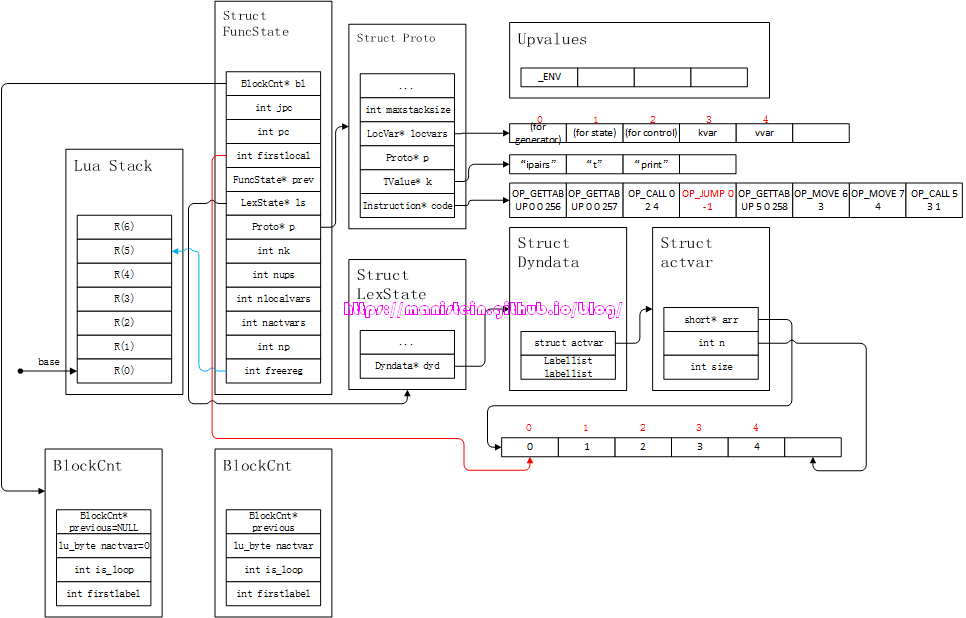
图38OP_JUMP之后的指令，则是forbody内部编译的指令，其本质就是打印k,v的值。在forbody退出之前，编译器还需要添加两个指令，一个是OP_TFORCALL，另一个则是OP_TFORLOOP。
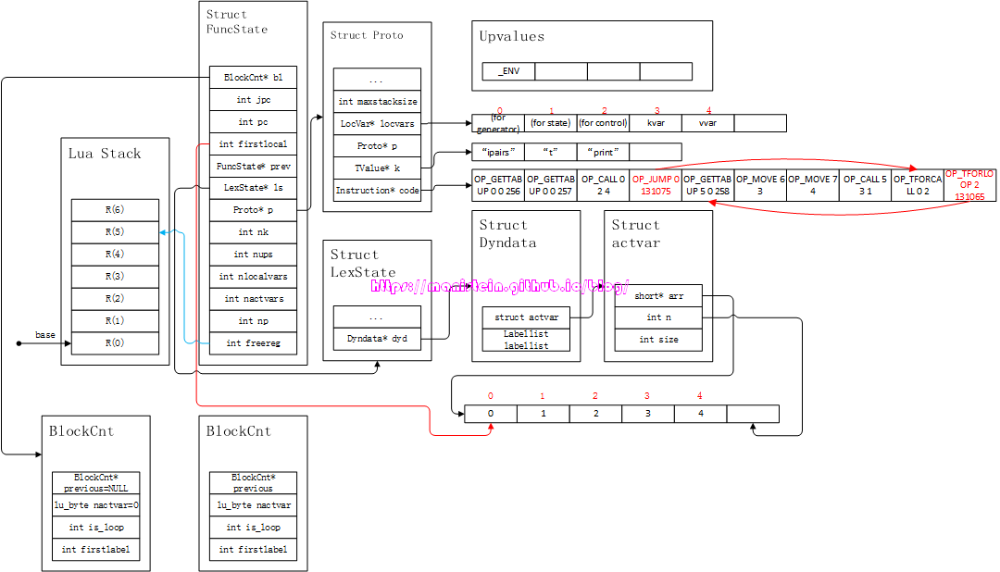
图39注意图中的OP_JUMP指令和OP_TFORLOOP指令的跳转。到这个阶段，其实forlist的编译工作就完成了，不过这里还是要对OP_TFORCALL和OP_TFORLOOP指令，结合上面的实例进行说明：
- OP_TFORCALL：它是iABC模式，A域指定(for generator)的位置，B域不使用，C则指明了从(for generator)中接收多少个返回值。执行它的时候，如果我们的(for generator)位于R(A)，那么此时，它会将迭代函数、迭代的table和当前迭代的key设置到R(A+3)~R(A+5)的位置上，于是在运行期lua栈得到图40的结果：
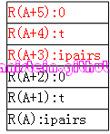
图40 接着，我们的OP_TFORCALL指令，会调用位于R(A+3)的ipairs函数，然后从ipairs函数接收C个返回值，并且将其从R(A+3)的位置开始赋值，得到图41的结果：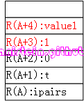
图41 - OP_TFORLOOP：它是iAsBx模式，这个指令是和OP_TFORCALL指令相辅相成的，它首先判断图41的R(A+3)值是否是nil值（当完成table array的最后一个元素的遍历时，ipairs函数会返回nil值），如果不为nil值，则将R(A+3)赋值给R(A+2)，然后执行图39的跳转指令，得到图42的结果，否则执行下一个指令，跳出循环：
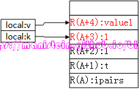
图42 我们可以看到，对于ipairs函数而言，我们输入一个key，它会返回该key的下一个key和对应的value值，放置在R(A+3)和R(A+4)的位置上（这两个值对应token in前面的k和v，可以通过搜索local变量k和v，找到他们的值），由于table的array最小下标是1，因此luaB_ipairs在初始化阶段，将(for index)设置为0，因此在迭代器中，默认0的下一个key是1，并返回1和value1，下次调用(for generator)时，则会将1传入，获得2和value2值，以此类推，直至(for generator)返回nil为止，遍历结束。
我们的另一个forlist的例子，则如下所示：
1 | for k, v in pairs(t) do |
它的编译指令和前面的ipairs是一样的，只是我们的(for generator)则替换成了pairs，这个函数不仅会遍历table的array部分，还会遍历hash表部分，终止的条件都是一样的，这部分留给读者结合源码去推导，这里不再赘述。到目前为止，我就完成了for statement的编译流程论述了。
break statement编译流程
在完成了循环语句的讨论以后，现在要讨论一个问题了，如何跳出循环？除了循环语句的cond-part以外，我们还可以通过break语句来跳出循环，那么我们现在就来讨论一下它的设计与实现原理。要彻底理解break语句的逻辑，首先还是要从数据结构层面入手。我们前面已经探讨了LexState结构和Dyndata结构，现在我们需要给Dyndata添加新的成员，如下所示：
1 | // luaparser.h |
上面的代码，展示了新的数据结构，标签和标签列表，在dummylua中，由于我没有实现goto语句，因此这里的标签列表其实质就是break标签的列表。我们在block一节里介绍过BlockCnt这个数据结构，当我们enterblock的时候，会记录该block如果有break语句，那么这个break语句会位于Labellist里的哪个位置，只有当Labellist的n值>BlockCnt的firstlabel的值时，才代表这个block内部有break语句。
那么我们的break语句是怎么编译的呢？首先我们要搞清楚block和Labellist的关系，我们现在来看一个例子：
1 | local i = 0 |
首先我们通过protodump工具来看一下，它的编译结果是怎样的：
1 | file_name = ../test.lua.out |
上面的code就是我们的指令列表，其中，code指令列表中的第4个指令，就是根据我们的break语句生成出来的jump，当i>=10的条件满足时，它就跳出循环。接下来我们再通过一张图来观察一下，这段代码有几个block？这些block和Labellist有什么关系？break语句怎么处理？
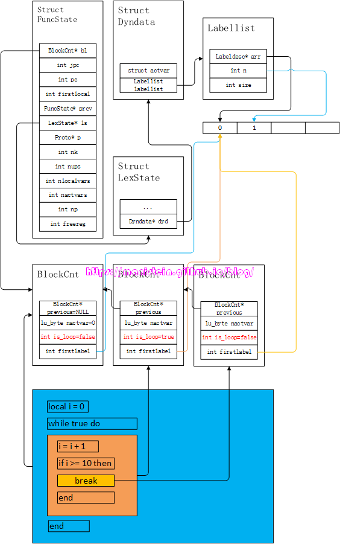
图43从图中，我们可以观察到，最下部将我们的范例代码，通过色块的方式结构化了，每一种颜色，代表一个block。我们的break语句处于最内存的block之中，而且block的previous指针，指向了上一层的block，每个BlockCnt结构的firstlabel都指向了全局的label列表的第0个位置，且is_loop变量我也标红了。可以观察上面已经完成编译的虚拟机指令集合，当我们编译到最内层block的break语句时，会生成一个OP_JMP指令，并且将break写入标签列表ls->dyd->labellist->n则向右移动了一位(从0移到1的位置，如图43蓝色箭头所示的部分)，此时并没有立即处理OP_JMP指令的跳转位置，而是暂存起来。当我们退出break所在的那个block时，因为那个block不是循环语句的block，因此leave这个block并不会进行任何的break语句处理。当我们退出中间的那个block时，因为它是循环语句的block，因此我们需要在ls->dyd->labellist->arr从右往左找break语句，将每一个break语句找出，找到他们所对应的jump指令地址，将跳转的位置设置到要退出的block外的第一个指令，直至n移动到block的firstlabel所指的位置为止。完成之后，ls->dyd->labellist->n则向左移动一位（从1移动到0的位置），此时n和蓝色块block的firstlabel相等，因此代表这个block没有break语句，不需要处理。
到现在为止，我们就完成了break statement的编译流程探讨了，接下来将进行function statement和return statement的编译流程探讨。
function statement的编译流程
现在我们来探讨一下function statement的编译流程，首先我们来观察一下，function statement的EBNF文法：
1 | [local] function name {'.' name} [':' name] '(' explist ')' |
方括号内代表的是，该部分出现0次或1次，而花括号内出现的部分，表示出现0次或多次。上面的EBNF文法，展示了function statement的语法结构，如果还要细分，可以按照如下几个点来：
- name-part:token function之后，token ‘(‘之前的部分，被我称之为name-part。因为它定义了函数的名称，提供了查找函数的依据
- func-part:token ‘(‘之后，token end之前的部分，是函数的本体
现在我们通过两个例子来探讨一下，首先来看一下第一个例子：
1 | local function test(a, b, c) |
这个例子，定义了一个local函数，因为有了local保留字，因此这个函数的name-part就是在栈上的一个局部变量，我们现在先来看看编译器对name-part的编译结果，如图44所示：
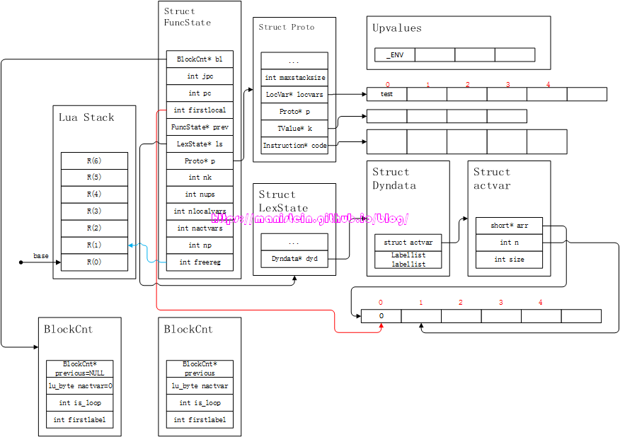
图44从图44来看，name-part的编译处理，和我们的local statement对变量名的处理并无二致，实际上也是如此，我们的TK_FUNCTION只是确保我们的编译流程，能够走到function statement的编译分支之中。到这里，上面例子中的name-part就完成编译了，紧随其后的则是对func-part进行编译。func-part的编译主要分为两个部分，第一个部分是对参数列表的处理，第二个部分则是对函数体的处理。在进入func-part的编译之前，编译器首先会构建一个新的FuncState实例，用它来存储我们对test函数的编译结果，在开始编译函数体之前，我们得到图45的表示：
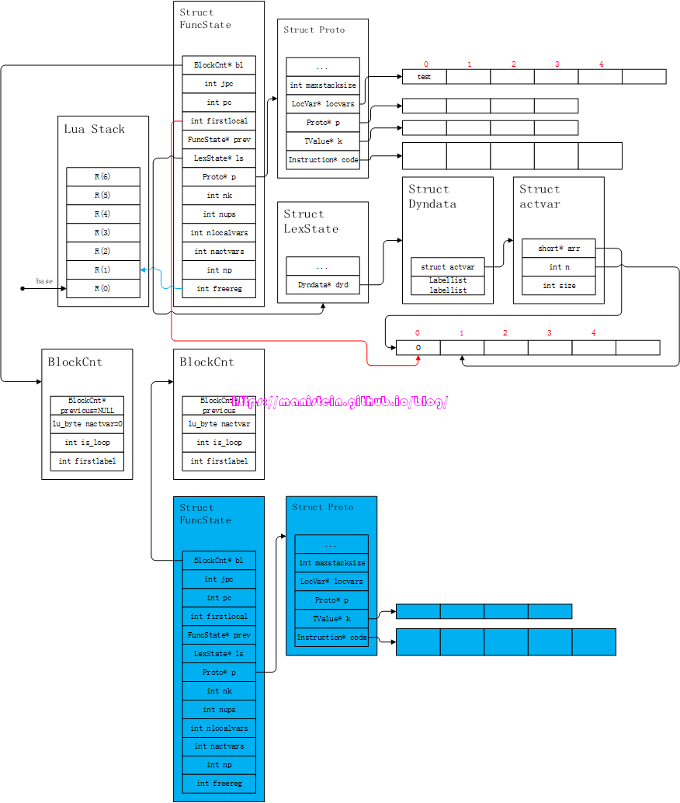
图45上图中，蓝色部分，就是新增的FuncState结构，同时也新增了一个Proto结构，这是进入函数体编译前的准备工作，接下来，我们的编译器首先会对’(“)‘内的参数进行编译，其实它的做法很简单，就是将参数变量，作为local变量写入到新FuncState结构的Proto实例的locvars列表中，作为这个函数的局部变量存在，同时调整freereg变量的值，于是我们得到了图46的结果：
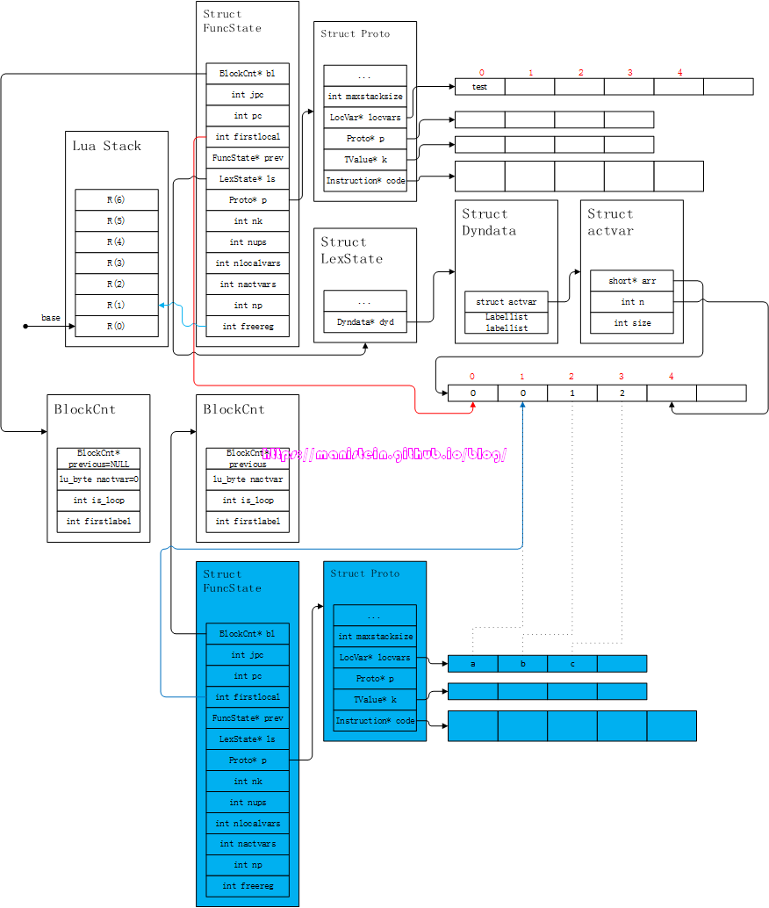
图46在完成了参数处理之后，编译器会开始处理函数体部分，上面例子很简单，就是先将print函数入栈，然后将a、b和c三个参数入栈，最后再打印，于是得到图47的结果：
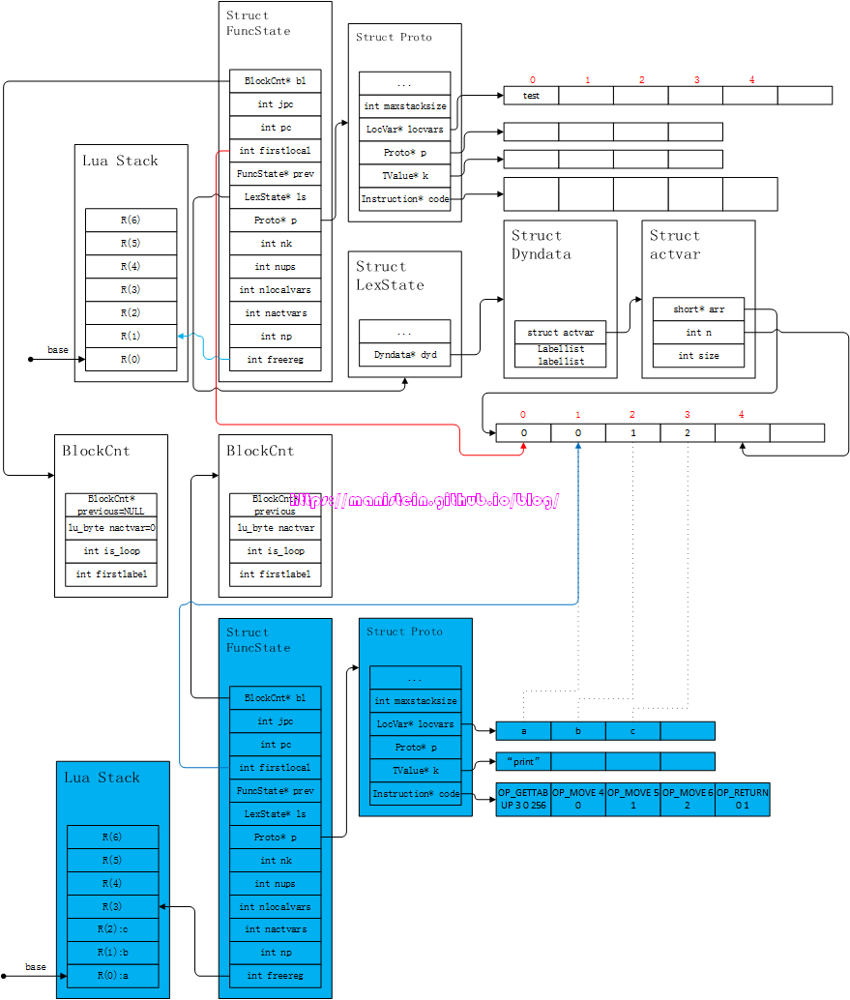
图47函数体的编译结果，基本上存储在了新的Proto结构（蓝色）之中，注意其左边的虚拟栈，在编译器是不存在的，这里画出来的目的，主要是想告诉读者，每个函数在运行阶段，都有自己逻辑上独立的虚拟栈，这个虚拟栈是在调用函数之前确定的。在函数完成编译之后，新的FuncState结构是需要被回收的，但是Proto结构将被保留，并且存储在上一级FuncState结构所对应的Proto实例的p列表之中，同时ls->dyd->actvar->arr中的a、b和c这三个参数变量，也会被清除掉，于是我们得到了图48的结果：
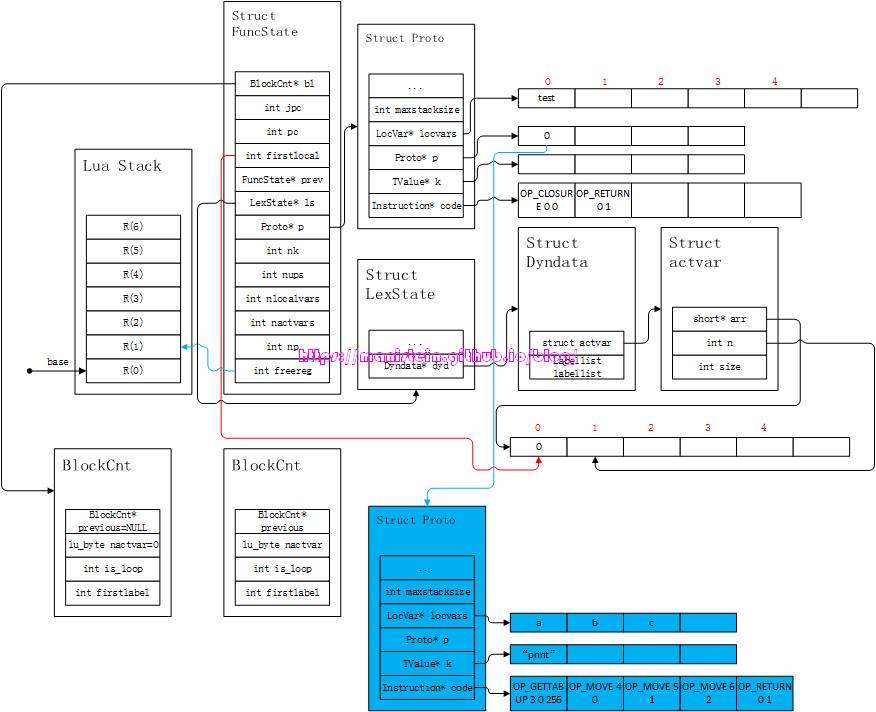
图48这里需要注意的是，编译top-level function对应的FuncState结构的Proto实例，将新编译的Proto放到了自己的p列表中的第一个位置，表示其内部的第一个被定义的函数，同时生成了两个指令，一个是OP_CLOSURE，它是iABx模式，它会创建一个LClosure类型的实例，并且放置到R(A)的位置，在我们的例子中，就是R(0)的位置，也就是local变量test所在的寄存器上，Bx指定了，它的函数体是哪个，这里是0，表示刚刚编译好的蓝色体Proto实例，是这个LClosure实例的编译信息载体。如果你忘记了虚拟机如何运行函数的流程，那么可以回到Part5进行复习，这里只论述编译器的部分，不再进行赘述。
我们的name-part还可能是table里的某个域，也可能是一个全局变量，但不管怎样，最终，编译器都会为编译好对的Proto结构，创建一个LClosure实例，并且将其赋值到指定的变量中，我把第二个例子留给读者自己去推导，就当是一个随堂作业：
1 | function test(a, b, c) |
除了上面例子所展示的方式外，lua还给我们提供了一种语法糖，如下所示：
1 | function t:foo(a, b, c) |
函数名前，通过’:‘来修饰，并且函数体内出现了self的关键字。通过’:‘来修饰的函数，其实就是一种语法糖，上面的代码等价于：
1 | function t.foo(t, a, b, c) |
这种方式，让我们省去了将参数t传入，而且t是作为参数表的第一个参数，self就是指代这个函数本身，我们现在来看一下，这个函数的编译流程。首先编译器会对name-part进行编译，得到图49的结果：
图49
这个阶段，我们往常量表k中，写入了”t”和”foo”，并且生成了一个OP_GETTABUP指令，这个指令将全局变量t，读取到寄存器R(0)中。接下来则进入到函数体的编译流程之中了，于是我们得到了图50的结果：
图50
我们可以看到，新的Proto实例（蓝色）的locvars列表，第一个local变量为self，也就是说，函数体内所有的self调用，都会找到R(0)这个位置的变量，其后才是变量，a、b和c。在完成参数表的编译之后，接下来开始编译函数体，得到图51的结果：
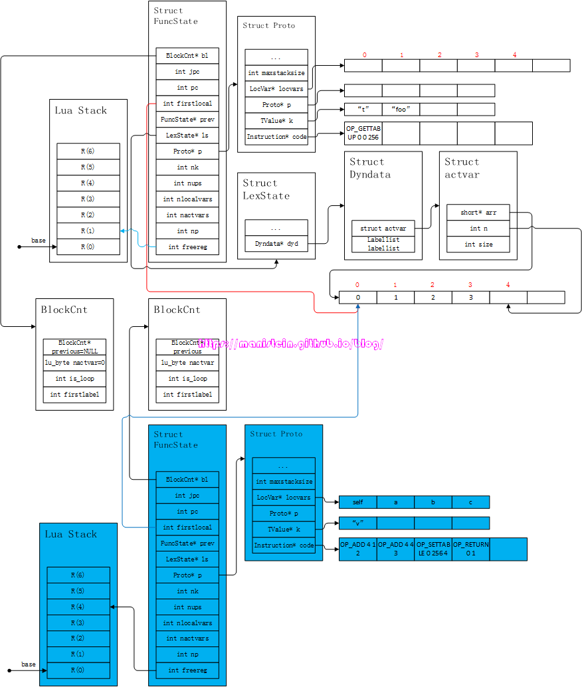
图51上图一次性将函数体内的编译流程执行完，将编译后的结果，存储到了蓝色的Proto实例中，它首先将a和b相加，然后再和c相加，将最后的结果，放置到R(0)这个table的”v”域中。完成编译以后，蓝色的FuncState结构将被清除，并且将蓝色的Proto实例，设置给白色Proto实例的p列表中，得到图52的结果：
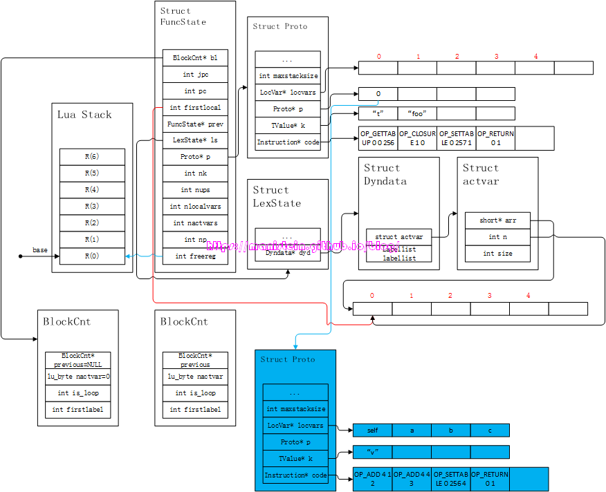
图52我们可以看到，白色的Proto实例，新增了几个指令，分别是OP_CLOSURE、OP_SETTABLE和OP_RETURN，OP_CLOSURE和前面讨论的一样，这里往R(1)的位置，创建一个LClosure实例，并且其执行体为fs->p->p[0]，也就是我们的蓝色Proto实例，然后将这个LClosure实例，设置到位于R(0)的table t的”foo”域上，到这里为止，编译流程就完成了。
虽然，我们已经完成了，关于self函数的编译流程，但是这个self变量，是怎样设置到函数栈的第一个local位置呢？这里，我们需要结合调用函数的逻辑来看，首先我们来看一个例子：
1 | t:(a, b, c) |
我们通过protodump工具，将上面的函数编译好以后，得到如下的结果：
1 | file_name = ../test.lua.out |
从上面的结果，我们得到如下的流程：
- 执行code[1]的指令OP_GETTABUP 0 0 256，将table t加载到R(0)的位置，得到图53：图53
- 执行code[2]的指令OP_SELF 0 0 257，将位于R(0)的table t加载到R(1)的位置上，并将函数t[“foo”]加载到R(0)的位置，得到图54：图54
- 执行code[3]~code[5]，将a、b和c三个参数入栈，得到图55：图55
- 调用t[“foo”]这个函数，并结束程序
通过上面这个例子，和前面的编译结果对比，就能够理解self函数的编译和执行流程，一切也就一目了然了，到这里为止，我们就完成了function statement编译流程的论述了。
return statement编译流程
return statement的编译流程很简单，就是将要返回的参数压栈，并且生成OP_RETURN指令，OP_RETURN指令是iABC模式，A指示了第一个要返回的参数在栈中的位置，B指示了又多少个返回值，当B>0时，表示返回B-1个参数，当B==0时，表示从第一个返回值，到栈顶都是返回值。关于OP_RETURN的执行流程，Part5里有详细的讨论，这里不再赘述。读者可以使用protodump工具，来查看return语句的编译结果。
结束语
截止到本篇，我就完成了lua内置编译器的全部论述了，后续内容将与编译技术无关。本篇我首先对block的含义，处理流程进行详细的说明，接着对各种不同的statement的编译进行了详细的讨论。全文通过图文的方式来论述流程，没有贴过多的代码和数学公式来进行编译技术的讲解。我相信这种方式能够更好地表述编译流程。尽管本篇没有前面几篇的篇幅长，但是也同样花费了我大量的时间和精力，希望能够给读者带来良好的阅读体验。截止到目前，最难的编译器和虚拟机构建部分已然完成，后续将一马平川，我相信整个lua系列即将完结。